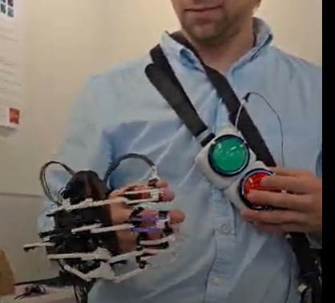

Manual Button State Machine
This document describes the button-based state machine for manually controlling the NML Hand Exoskeleton. The system includes two physical buttons, routed through extension wires, allowing the user to cycle gestures and states in real time without a host PC or BLE device.
Overview
The exoskeleton supports gesture-based motion, where each gesture (e.g., grasp, pinch, point) can have multiple states (e.g., “open”, “closed”). The system is equipped with two physical buttons:
Cycle Gesture Button: Switches between predefined gestures.
Cycle Gesture State Button: Advances to the next state of the currently selected gesture.
These buttons provide tactile, hands-free switching and are especially useful during wearable operation and rehabilitation trials.
Hardware Setup
{kind=link}

Attach the Button Harness Drape the harness over the user’s shoulder, ensuring the buttons rest comfortably within thumb or index finger reach on the opposite side.
Connect Extension Wires The buttons are connected to the gesture controller board via female jumper wires. Refer to the following pin assignments defined in config.h:
CYCLE_GESTURE_PIN = 10GESTURE_STATE_PIN = 11
Insert the extension wires into the respective digital input pins on the microcontroller.
Power Connection The exoskeleton now includes an in-line power switch between the microcontroller and battery pack. To power on:
Ensure all servo connectors are firmly attached.
Flip the switch to the ON position.
A status LED (pin
STATUS_LED_PIN) will blink once to confirm startup.
System Boot-Up After powering on, the system initializes to the default operating mode: - Default Mode:
gesture_fixed(seeDEFAULT_EXO_MODEin config.h) - Verbose Logging: Enabled by default for debugging (seeDEFAULT_VERBOSE)
Interaction Logic
Short Press on Gesture Button (Pin 10) Cycles to the next gesture in the gesture library. If the last gesture is active, it wraps around to the first.
Short Press on State Button (Pin 11) Cycles through the internal states of the current gesture (e.g., open → closed).
Debounce Time Both buttons have a software debounce of
50msto prevent unintended double-presses. This is set using:constexpr int BUTTON_DEBOUNCE_DURATION = 50;